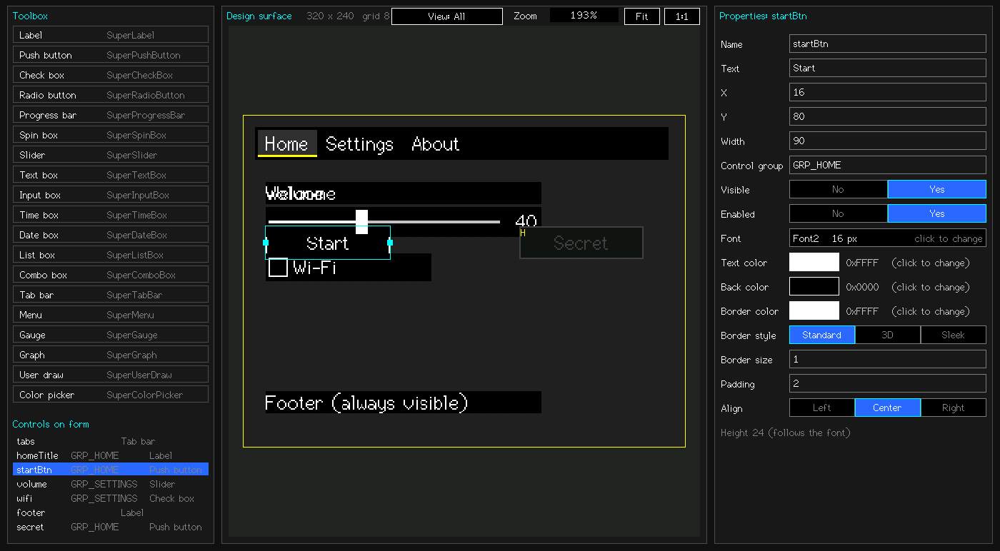

Form Designer: your first form
The Form Designer is a desktop program (macOS, Linux, Windows) for laying out a SuperGUI screen with the mouse. It draws the real SuperGUI controls, so what you see is what the device draws, and it writes the C++ for you: a header that is regenerated every time, and your own file that is written once and never touched again.

Build and start it
brew install sdl2 cmake # macOS (Linux: your package manager's SDL2 + cmake)
cd tools/FormDesigner
cmake -S . -B build
cmake --build build -j
build/FormDesignerLovyanGFX is looked up next to the SuperGUI folder (../../../LovyanGFX); otherwise add -DLGFX_ROOT=/path/to/LovyanGFX. On Windows point CMakeLists.txt at your SDL2 development files.
Your first form in ten steps
- Name and size the form. With nothing selected the right panel edits the form: Name, Width, Height (32x32 to 1920x1080: a big form scrolls and zooms) and Back color. Use your display's real size.
- Click a toolbox item, then click the form to place a control. It snaps to the grid (press
Gto change the grid). - Click a control to select it. Drag to move it, drag the handles on its left / right edge to resize it, arrow keys nudge (Shift = one grid step), Delete removes it, Tab selects the next one.
- Name it. The Name is the C++ member you will use in code (
okBtn,volume). Names must be safe C++ names; the field turns red and says why when they are not. - Set its properties in the right panel: text, colours, font (click the Font row for the font dialog), border, and the control-specific rows (value, range, items ...). Only values that differ from the control's default are saved and generated.
- Save with Ctrl/Cmd+S. A file dialog always opens, on the form's own file; type another name to save under it.
- Export with Ctrl/Cmd+X. A folder dialog opens on the folder used last (saved in the form file); choose the folder for the code and click OK. It writes
Form1.designer.h(regenerated every time) and, the first time,Form1.h(yours). - Copy both files into your sketch and write your code in
Form1.h: the handlers (okBtn_Click()...) are already there as empty stubs. - Run it:
Form1 ui(&lcd, &Enc, &BtnA, &BtnB);thenui.Show();insetup()andui.Service();inloop(). - Change the layout later: edit in the designer, export again. Your
Form1.his never overwritten.
msgYesNo confirmation box (see Message boxes). Delete it if you do not need it.What the designer can place
Label, Push button, Check box, Radio button, Progress bar, Spin box, Slider, Text box, Input box, Time box, Date box, List box, Combo box, Tab bar, Menu, Gauge, Graph, User draw, Color picker and Rich text. Each is described on its own page under Controls; the designer page for a control only adds how its properties are edited. Message boxes are not placed on the surface: they live in a list (see below).